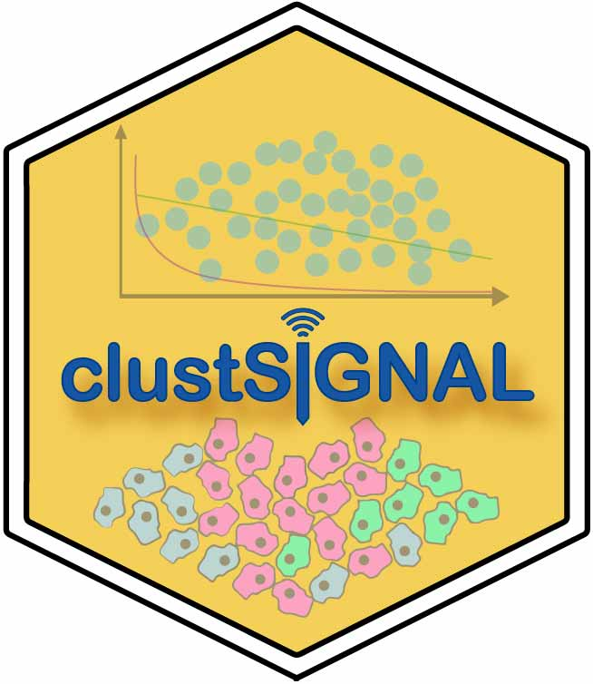
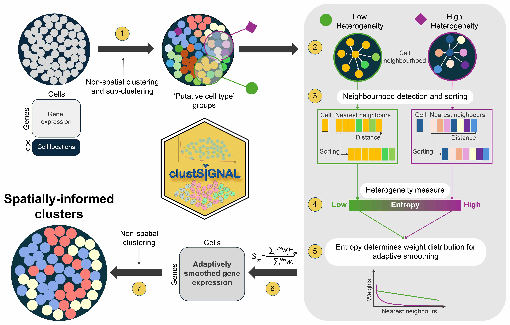

ClustSIGNAL: Clustering of Spatially Informed Gene expression with Neighbourhood Adapted Learning.
An R package to perform spatially-informed cell type clustering on high-resolution spatial transcriptomics data. This method has two-fold motivation: overcoming data sparsity by using neighbourhood heterogeneity information to guide an adaptive smoothing approach, and performing spatially-informed clustering by embedding spatial context into the gene expression. To achieve these, we calculate entropy as a measure of heterogeneity of cell neighbourhoods and use it to generate weight distributions and perform adaptive smoothing of gene expression. Homogeneous neighbourhoods generally have low entropy, and so, smoothing is performed over more cells in these neighbourhoods. Contrarily, heterogeneous neighbourhoods have high entropy and are smoothed over a much smaller region. The resulting adaptively smoothed gene expression is used for clustering.
For a tutorial on how to use ClustSIGNAL, see the vignette at this website.
Installation
To install ClustSIGNAL via Bioconductor:
library(BiocManager)
BiocManager::install("clustSIGNAL")To install ClustSIGNAL from GitHub:
# install.packages("devtools")
devtools::install_github("SydneyBioX/clustSIGNAL")Method description

Figure: ClustSIGNAL method overview.
Here, we present ClustSIGNAL, a spatial clustering method developed to handle data sparsity while considering the variability in cell arrangement of tissue regions. The core steps involved in the method are sequential:
1. The method starts with non-spatial clustering and subclustering (default louvain clustering) to classify cells into clusters and subclusters that we refer to as ‘initial clusters’ and ‘initial subclusters’, respectively.
2. The neighbourhood of each cell is then defined in terms of initial subcluster composition.
3. The cells in the neighbourhood are also sorted and rearranged so that the neighbours belonging to the same initial clusters as the index cell are placed closer to it.
4. Neighbourhood heterogeneity is measured as entropy, where a high entropy value indicates more heterogeneity in the neighbourhood and a low entropy value indicates a more homogeneous neighbourhood.
5. The entropy values are used to generate weight distributions specific to each neighbourhood.
6. The gene expressions of cells are adaptively smoothed using the entropy-guided weight distributions; cells in heterogeneous neighbourhoods (high entropy regions) undergo smoothing over a smaller region, whereas cells in homogeneous neighbourhoods (low entropy regions) undergo smoothing over a larger region.
7. Non-spatial clustering is performed with adaptively smoothed gene expression to generate ClustSIGNAL clusters.
ClustSIGNAL parameters
ClustSIGNAL package uses a SpatialExperiment object as input. We provide users with a number of parameters to explore and experiment with, as well as prior tested default values for quick runs. ClustSIGNAL can be used for single sample or multisample analysis with just one function call. Below is the list of the parameters offered and their possible values:
spe - SpatialExperiment object with cell spatial coordinates and normalized gene expression in it.
samples - column name in cell metadata of the spe object that contains sample names.
dimRed - dimensionality reduction method name in reduced dimensions of the spe object. Default value is “None”, in which case PCA is calculated and used as low dimension data.
batch - whether batch correction should be performed. Default value is False.
batch_by - column name in cell metadata of the spe object containing the groups by which to perform batch correction. By default, batch_by is set to “None”. If the batch option is set to True, the batch_by value must be changed to the group name to perform batch correction.
NN - neighbourhood size in terms of the number of nearest neighbours to consider. Value should be > 1. Default value is 30.
kernel - type of weight distribution to use. Can be Gaussian (default) or exponential distribution.
spread - value of distribution parameter - standard deviation of Gaussian distribution or rate of exponential distribution. Default value is 0.3, recommended for Gaussian distribution. For exponential distribution, recommended value is 5.
sort - whether cell neighbourhoods should be sorted by their initial cluster labels. Default value is True.
threads - number of cpus to use for parallel runs. Default value is 1.
outputs - choice of output types. Default value is ‘c’ for a list containing data frame of cell IDs and ClustSIGNAL cluster labels. Other possible values are “n” for a list of ClustSIGNAL clusters dataframe and neighbourhood matrix, “s” for a list of ClustSIGNAL clusters dataframe and final SpatialExperiment object, and “a” for a list of all 3 outputs - ClustSIGNAL clusters dataframe, neighbourhood matrix, and final spe object.
-
clustParams - parameter options for TwoStepParam clustering methods in the bluster package. The clustering parameters are in the following order in this list:
clust_c represents number of centers for clustering with KmeansParam. By default this is set to 0, in which case the method uses either 5000 centers or 1/5th of the total cells in the data as the number of centers, whichever is lower.
subclust_c represents number of centers for sub-clustering the initial clusters with KmeansParam. The default value is 0, in which case the method uses either 1 center or half of the total cells in the initial cluster as the number of centers, whichever is higher.
iter.max for the maximum number of iterations to perform during clustering and subclustering with KmeansParam. Default value is 30.
k indicates the k-value used for clustering/subclustering with NNGraphParam. Default value is 10.
cluster.fun is the graph clustering method used with NNGraphParam. By default, the Louvain method is used.
Running ClustSIGNAL
Before running ClustSIGNAL, it is important to ensure that the input SpatialExperiment object has spatial coordinates stored in the spatialCoords matrix. Otherwise, the method will throw an error asking the user to provide spatial coordinates.
# load required packages
library(clustSIGNAL)
data(ClustSignal_example)
# Here, the sample labels are in 'sample_id' column.
res <- clustSIGNAL(spe, samples = "sample_id", outputs = "a")